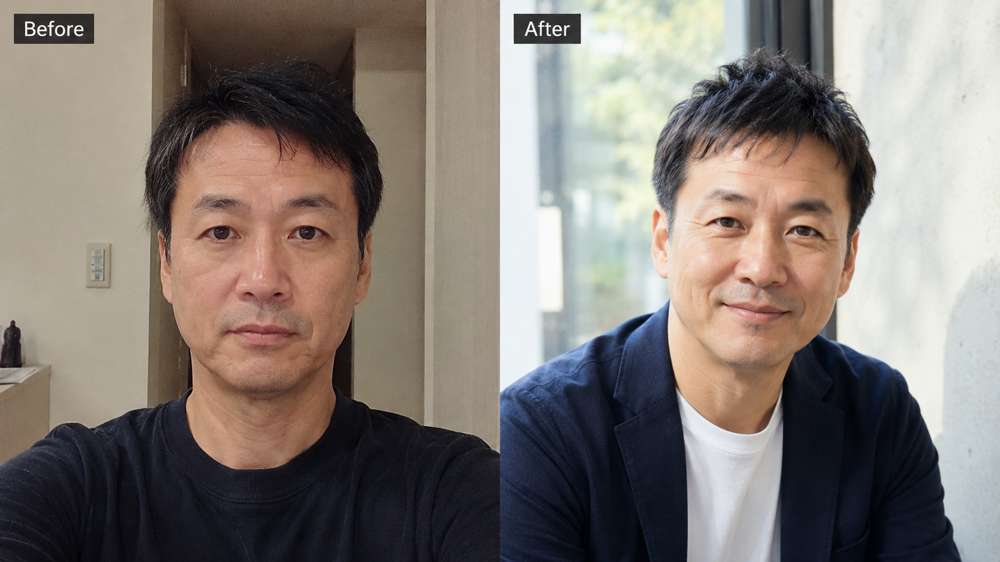
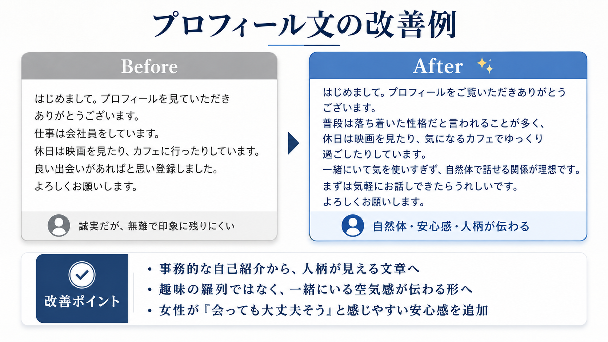
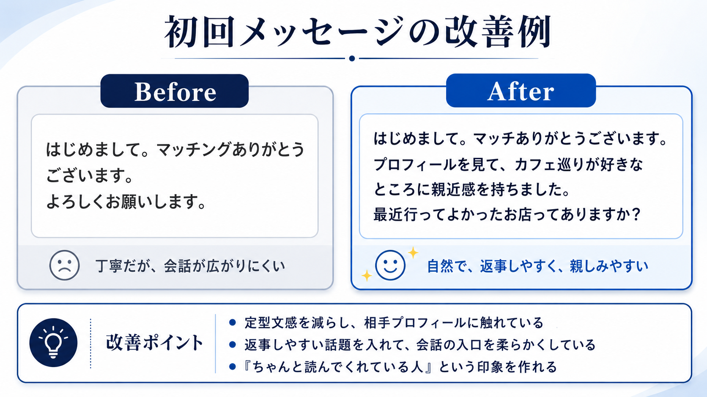

プロフィール写真の改善例
暗い室内自撮りから、自然光・軽い笑顔・清潔感のあるプロフィール写真へ。

自然光で明るく背景の生活感を減らす軽い笑顔へ
※ 写真は実在のお客様ではなく、改善イメージを伝えるための架空モデルです。
Sample Report
プロフィール再設計ライト診断で実際に届くレポートの見本です。診断スコア、写真レビュー、アプリ風プロフィール画面、文章添削、初回メッセージ例、7日間アクションプランまで掲載しています。

49歳男性・Pairs利用・いいねが少ないという架空ケースをもとにした診断見本です。実際の納品では、あなたの写真・プロフィール文・メッセージ状況に合わせて個別に作成します。
Case Profile
| 年齢 | 49歳 |
|---|---|
| 利用アプリ | Pairs想定 |
| 悩み | いいねが少ない / 写真に自信がない / 会話が続かない |
| 目的 | 会う前に離脱されにくいプロフィールへ改善 |
Diagnosis Score
なんとなく良い・悪いではなく、写真、文章、メッセージのどこで損しているかを項目別に整理します。
Total Impression
誠実さはありますが、写真・プロフィール文・初回メッセージが少しずつ弱く、女性から見た「会ってみたい理由」がまだ作れていない状態です。
暗さと背景で損しています。
表情が固く、会話しやすそうな雰囲気が弱く見えます。
人柄と関係性の希望がまだ薄いです。
丁寧ですが、会話の入口が弱いです。
Before / After
写真・プロフィール文・初回メッセージの3つを、見える形で比較します。
暗い室内自撮りから、自然光・軽い笑顔・清潔感のあるプロフィール写真へ。

※ 写真は実在のお客様ではなく、改善イメージを伝えるための架空モデルです。


App Profile Mockup
実際のマッチングアプリでは、写真6枚・短い自己紹介・プロンプト回答・会話のきっかけがまとめて見られます。ここを画面全体で整えると、女性が感じる安心感が変わります。
映画 / カフェ / 良い出会いがあれば
仕事は会社員です。休日は映画を見たり、カフェに行ったりしています。よろしくお願いします。
映画を見たり、カフェに行ったりします。
良い出会いがあればと思っています。
映画 / カフェ / 自然体で話せる関係
普段は落ち着いた性格だと言われることが多く、休日は気になるカフェでゆっくり過ごすことが多いです。
気を使いすぎず、映画やカフェの話をしながら自然体で過ごせたらうれしいです。
無理に盛り上げるより、安心して話せる関係を大切にしたいです。
Photo Audit
それぞれの写真に役割を持たせ、足りない要素を整理します。
| 写真 | 役割 | 判定 | 改善方針 |
|---|---|---|---|
| メイン写真 | 第一印象 | 差し替え推奨 | 自然光・軽い笑顔・胸から上の他撮り風写真へ。 |
| サブ写真1 | 休日感 | 追加推奨 | カフェ、公園、散歩など自然な日常写真を追加。 |
| サブ写真2 | 全身・服装 | 必須 | 清潔感のある服装で、半身〜全身がわかる写真を用意。 |
| 趣味写真 | 会話のきっかけ | 改善余地あり | 映画、カフェ、旅行、散歩など相手が反応しやすい写真を1枚。 |
Line Editing
どの文がなぜ弱いのか、どう直すと女性に伝わりやすいのかを整理します。
| 現在の文 | 問題点 | 修正例 |
|---|---|---|
| 仕事は会社員をしています。 | 情報はありますが、人柄が見えません。 | 普段は落ち着いた性格だと言われることが多く、仕事もコツコツ取り組むタイプです。 |
| 休日は映画を見たり、カフェに行ったりしています。 | よくある趣味の羅列に見えます。 | 休日は映画を見たり、気になるカフェでゆっくり過ごすことが多いです。 |
| 良い出会いがあればと思い登録しました。 | 受け身で印象に残りにくいです。 | 一緒にいて気を使いすぎず、自然体で話せる関係が理想です。 |
Completed Profile
Message Patterns
相手プロフィールに合わせて使いやすい初回メッセージを複数パターンで提案します。
7 Days Action Plan
診断レポートは読むだけで終わらせず、何から手をつければいいかを行動順に整理します。
| 日程 | やること | 目的 |
|---|---|---|
| 1日目 | メイン写真を差し替える | 第一印象の減点を最初に減らす |
| 2日目 | プロフィール文の冒頭を変更する | 安心感と人柄を伝える |
| 3日目 | サブ写真を1枚追加する | 休日感・服装感・人柄を補う |
| 4日目 | 初回メッセージを変える | 返事しやすい会話の入口を作る |
| 5〜7日目 | 反応を見て再調整する | 写真・文章・メッセージを微修正する |
Conclusion
現状は「大きく悪い」わけではありません。ただし、写真・プロフィール文・メッセージが全部少しずつ弱いため、総合印象で損している状態です。
最初に直すべき順番は、写真 → プロフィール冒頭 → 初回メッセージです。